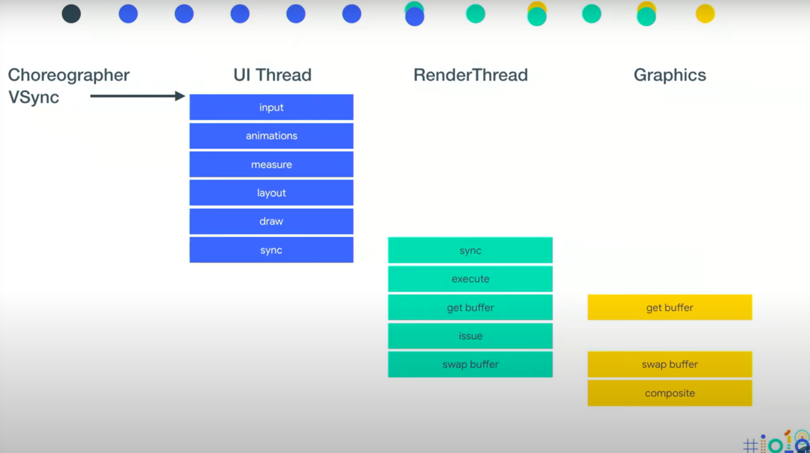
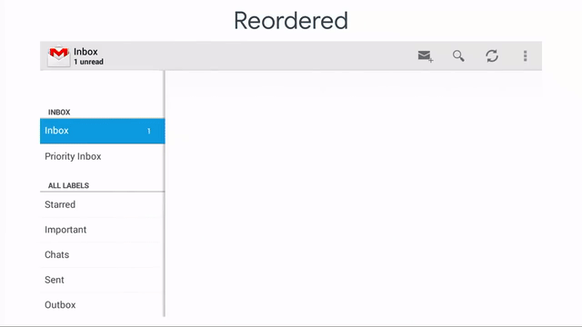

Android渲染Part1: 帧渲染
文章目录
这篇文章是Chet Haase和Romain Guy做的<Drawn out: How Android renders (Google I/O ‘18)>演讲的翻译。由于内容较多分为两部分，第一部分主要讲Android UI中每一帧的渲染过程；第二部分讲Window的合成过程。
这系列文章并不包含如何优化UI的内容。这系列文章可以解答诸如以下问题：
- 什么是硬件加速？
- 它为什么让UI流畅的关键技术？
- 控件是怎么显示到屏幕上的？
- 16ms里都做了什么事情？
- 手机屏上为什么能同时显示系统栏、应用和虚拟按键？
文中涉及到的概念
- Rendering: Android: Turning a UI descripton into pixels on the screen.
- DisplayList: An encapsulation of the rendering commands for a view.
- Invalidation: The process of causing things to be redrawn.
- Traversal: Performing all phases of rendering for a frame. 具体来说包括：measure, layout, draw
- Render Thread: Thread responsible for issueing display list operations to GPU. 它是一个独立的线程，native代码实现，和Java代码、application代码没有关联，只和GPU通信。它可以pre-rendering（预渲染），生成DisplayList信息然后发送给GPU；除此之外，它还可以处理各种动画（如circular reveal animation，ripple animation，vector drawable animation）
- Request Layout: The process of causing measure/layout to be scheduled. 它有点像invalidate，不过它请求的是重新measure和layout。
- Measure: Asking views their preferred size.
- Layout: Telling views their size and position. views和它的parent会根据系统中所有的限制条件进行谈判。
Android帧渲染过程

先整体看一下整个渲染管线：从收到vsync(Choreographer)开始，在UI Thread经过input处理，animations, measure, layout, draw后，将处理结果sync给RenderThread，再经过execute, get buffer, issue后，通过swap buffer将buffer交给Graphics，在这里完成composite后，这一帧UI就显示到了屏幕上。这张图是Android Rendering架构的一部分（注：只包含了软件部分）
图中顶部不同颜色的点表示这一步骤在哪个进程完成。
简单示例：列表Item Click过程讲解

下面通过一个例子来更好的理解这个渲染的过程。这个例子中只有一个RecyclerView，包含很多元素，当点击其中一个元素，其背景会随机变色。

例子的布局文件实现也很简单。

当demo显示在屏幕上时，其UI对应的view hierarchy如上图所示。圈出来的部分是Activity的内容区域，其余View都是应用无法影响到的。

我们以列表中一次点击事件为例，具体地看一下这个过程。首先当用户点击RecyclerView中的一个item时，这时会触发一个VSync事件，Choreographer收到这个事件，通知UI Thread处理这个input事件。在Input事件的结果处理中，改变View的背景颜色，并调用invalidate()方法。

invalidate()的过程，是从发起invalidate的view开始，向上一级一级传播，最终到达root view也就是DecorView，再由DecorView告知ViewRootImpl.java去scheduleTraversals()。
ViewRootImpl是View和WindowManager之间的桥梁，实现了它们间交互需要的协议。

由于在这个例子中，view大小和位置的没有变更，所以traversal只会触发draw()调用。到达DecorView时，DecorView实际上是没有变化的，所以它的DisplayList也没有变化，但它会获取子view的DisplayList来进行判断；就这样，draw从DecorView开始，自顶向下遍历至Item2，Item2它是知道自己发起过invalidate，所以它要进行重绘。就这样，getDisplayList在Item2这里终止，并调用该view的draw方法重新生成它自己的DisplayList。

在draw方法里通过canvas画了一个矩形和一段文字，这些绘制代码最终会被转化进DisplayList中。

draw调用完成后，就会得到更新后的完整的DisplayList（整个View Hierarchy的）

下一个步骤是将DisplayList从Java层的UI Thread同步给native层的Render Thread。Render Thread收到DisplayList，并进行Damage Area计算和非硬件位图（non-HW Bitmap）的上传。
Damage Area指的是需要重新绘制的区域，是通过边界判断算出来的。
non-HW bitmaps这个指的是创建在Java层的bitmap，对应的HW bitmap指的是创建在GPU内存区域的bitmap。Android O以前的系统，bitmap都是non-HW的，它以后的系统引入了HW bitmap这个配置，可以直接在GPU内存中创建bitmap，同时Java层有一个对应的对象。non-HW bitmap在绘制时，需要将它拷贝到GPU内存，这样对于系统RAM而言，同一个这类bitmap就占有两份内存，并且开辟内从也是耗时操作。（这个优化听起来就效果很好，😀；但实际上使用起来有诸多限制，使用不当反倒性能不好）

这张图展示了RenderThread在execute这一步所作的工作。它将DLOps进行一系列优化，如渲染类型（layers）、透明度（alpha）、重排（reordering）以及批量（batching）。
当给view设置alpha，或者设置hardware layer时，系统会识别出和这些view或layer相关的draw指令，然后把它们移动到frame绘制的最前面。这样做可以避免GPU内部的状态切换，而这个切换是非常昂贵的。如果不做这个优化，就会出现严重的性能问题。出现这个问题的原因并不是因为GPU慢，而是因为GPU在等待CPU给它指令。（从上图可以看出，经过这一步优化，所有fill操作都移植Ops队列前面）
再比如reordering and matching优化，它在重排后的DLOPs列表中找到那些相似的指令，然后进行匹配，再进行批量绘制。对于上面的例子，如果先画一个矩形，再画文字，如此反复，这样就会导致GPU的状态多次切换，状态切换是很昂贵的，它就会导致绘制的低效率。而通过这项优化技术，只要绘制命令不重叠，我们就可以一次绘制所有的矩形，然后一次绘制所有的文字。这就比前面的反复切换GPU状态的绘制高效很多。（从上图也可以看出这个优化结果）
通过下面两个例子，能很直观的感受到这些优化带来的改进。
这张图展示的是在honeycomb版本上放慢渲染管线看到的Gmail的绘制过程。可以看到，列表中绘制的元素和view hierarchy是对应的，绘制是按照代码顺序的（就是说最终绘制顺序和Canvas中的draw call顺序一致）。这种绘制机制非常低效。

经过了batching、merging和reodering之后，就会得到上面的结果。可以看到星星、文字基本上一次性就绘制出来了。背景是逐个draw的，这说明reodering生效了，但batching是不生效的，因为列表中的元素有轻微的重叠，所以必须逐个绘制以实现blending，保证alpha值是正确的。
从这个例子可以看出，最终的优化效果很取决于应用本身。举个例子，在Kitkat以后的setting应用，仅通过大约6个draw call就绘制出了整个界面，比之前少了非常多。

从上面得知，需要绘制的部分称作Damage Area（需更新区域），它之外的部分是不要绘制的。当我们处理DLOps，就可以知道哪些绘制是在这个区域之外的，可以被丢弃。这个过程在计算机图形学中称作trivial reject。在Android中，同样的也会reject掉那些和damage area不相交的部分的DLOps。

经过clipReject（裁剪）后，最终需要执行的DLOps只有三个：fill，draw text， draw line。

下一步需要做的事情是GetBuffer（获取缓冲区）。当刚开始执行GPU操作时，GPU会返回给我们这个buffer（具体地说是SurfaceFlinger回传了这个buffer）。

接着就是issue（发布）阶段。这一步是将DLOps转化为glCommand()，然后存进buffer里。

接着进行Swap Buffer（交换缓冲区）。到达这一步表示已经完成了所有的render操作，已经准备好将这一帧显示在屏幕上。这里会请求SurfaceFlinger来swap buffer，让这个buffer位于最前面并将它显示到屏幕上。

最后一步就是composite（合成）。屏幕上的各部分UI通过Hardware Compositor合成后输出给屏幕。（这一步是Render Thread执行swap buffer之后发生的，RT不需要等待在这里，合成是并行执行的）
复杂示例：列表滑动

下面再看一个超复杂的例子：手指拖动向上划，所有列表元素都跟随滑动向上移动，同时新的列表元素出现。
这个例子要分为两个阶段来观察。
阶段一：列表元素仅发生移动

第一阶段是，现有元素只有移动，不出现新元素。

第一步是处理down事件，这里会收到VSync事件，开始处理input事件。

RecyclerView对于down事件的处理是只改变startx/y的值，并return，因此黄线标注的管线此时不会执行。

当手指继续向上移动，RecyclerView就会收到move事件，因为在down事件中已经记录了最初的x/y，所以这里我们能知道移动了多少像素，计算出y轴偏移量，然后将RV中所有元素以这个y轴偏移量向上移动。
在offsetTopAndBottom的方法中，使用invalidateViewProperty()方法来通知view属性的变更。这个方法是Honeycomb版本加入的，它优化对DisplayList属性变化的请求操作。DisplayList里面除了前面讲过的图形操作，还包括了view的核心显示属性（display properties），这些属性包括translation，rotation，alpha等，这些属性变化后我们不需要重新渲染view。只需要在DisplayList数据结构中修改，然后在GPU的issue阶段就会被使用。可以看出，这个方法大大加速了渲染过程，因为这里不再需要重新渲染整个view。

invalidateViewProperties()会一级级向上传播，最终被ViewRootImpl处理。

当ViewRootImpl处理traversal时，就会执行draw。

这里的draw call不会改变DisplayList，只是更改了它内部的属性，所以这里可以立即sync给RenderThread。

之后的流程就和前面是一样的了。
阶段二：新元素出现

第二阶段是，随着列表滑动，新元素出现。

当继续向上滑动，RV收到move事件，继续处理offset，但此时Item 6地方可以显示出来了，因此需要创建、添加和绑定Item 6。添加view后，RecyclerView就需要调用requestLayout方法。

requestLayout将从父容器（这里是RecyclerView）开始向上一级级传播，最终被ViewRootImpl处理，安排一次traversal。

这次的traversal流程中会执行performMeasure和performLayout，去测量子元素和布局子元素。

performMeasure将从view树自上向下传播measure，然后就得到了所有view的期望大小。

完成了measure，就足以去计算view的layout信息。

最终新加入的Item 6完成了layout阶段。（对于view tree来说，它已经处于可以显示状态）

经过之后一些列的环节，Item 6最终被显示到了屏幕上。

这里要注意一个重要细节：当RecyclerView去requestLayout时，这里有一个优化，它并不会真正去做requestLayout动作，实际上会根据已掌握的parent和child的信息，设置child view的offset同时创建新item。这个优化ListView也有。
<正文完>
Refference
- Drawn out: How Android renders (Google I/O ‘18) Chet Haase和Roman Guy在IO 18上的演讲，详解了Android的渲染机制
- Android 基于 Choreographer 的渲染机制详解 这篇博文介绍了choreographer的工作原理
- ViewGroup.dispatchGetDisplayList() 从ViewGroup的源码可知，只有ViewGroup会去重建child的displayList，并且只有那个标记为PFLAG_INVALIDATED的child才会重建。
文章作者 teoking
上次更新 2021-05-14